49.5 s · 22 shots cut on the spoken words (take 1) · a, b = key frames of the action · shot 7 is a three-panel split screen · frames taken from the video, captions as they appear on screen · animation test round 3 with sound: your notes applied, half-resolution frames, lighting and grade come next
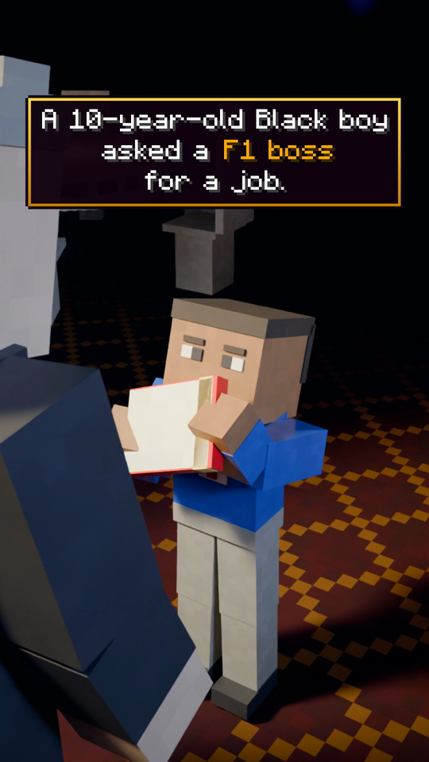
a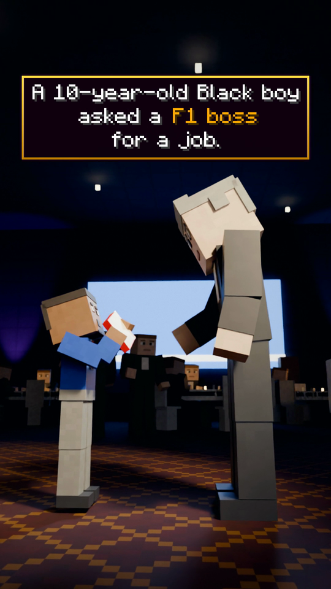
b“A ten-year-old Black boy asked a Formula One boss for a job.”
Minecraft-style title box with a gold border, no lower captions. a: over the boss's shoulder, the camera pans onto the tiny boy holding the book up, him in the middle of the frame. b (cut on 'Formula'): side on, he rises on his toes; the boss leans down and reaches for the book.
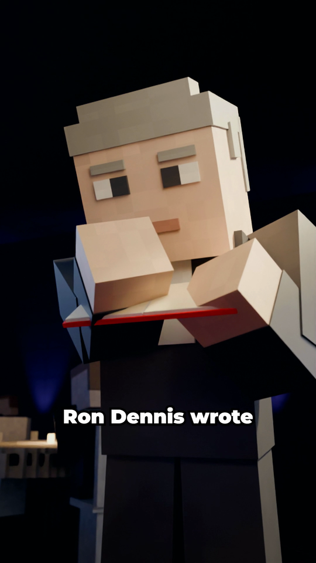
a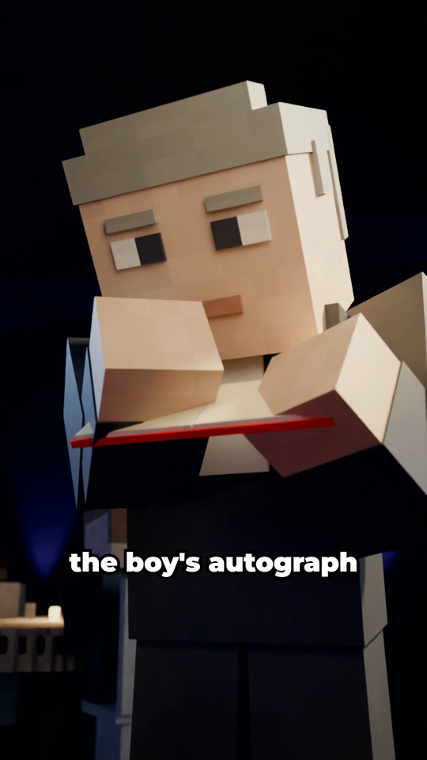
b“Ron Dennis wrote his answer in the boy's autograph book:”
Dennis takes the book and writes in it; the boy watches on tiptoe.
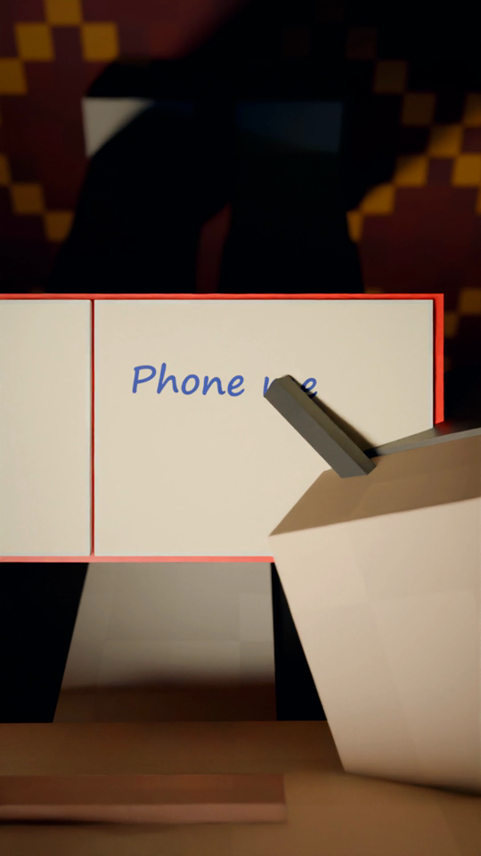
a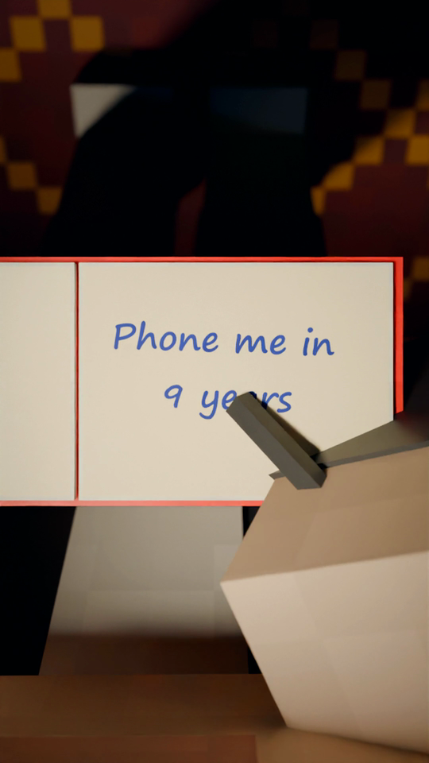
b“phone me in nine years.”
Insert: the page. 'Phone me in 9 years' appears word by word as it's spoken, then a made-up signature. No captions.
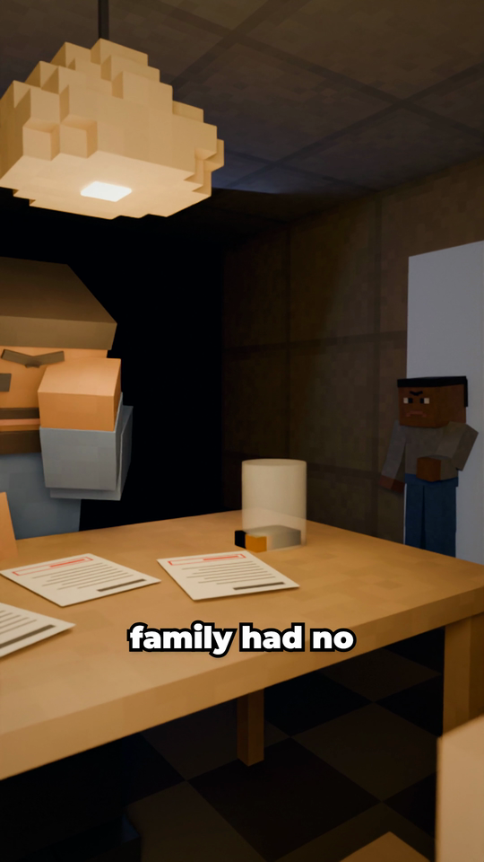
“But the boy's family had no money for racing. His”
Home, night: the dad at the table with the bills and a nearly empty coin jar rubs his eyes with the heel of his hand; the boy watches from the doorway.
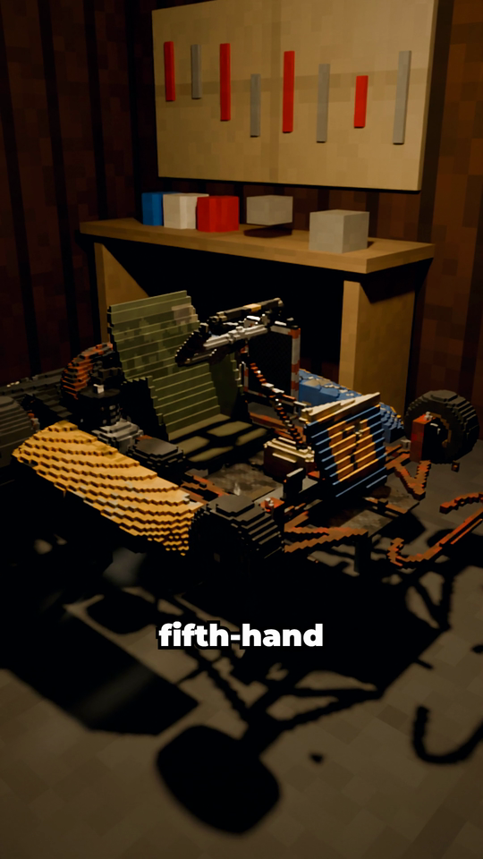
“go-kart was fifth-hand.”
The shed: the fifth-hand club kart up on a kart stand under the bare bulb (storyboard framing).
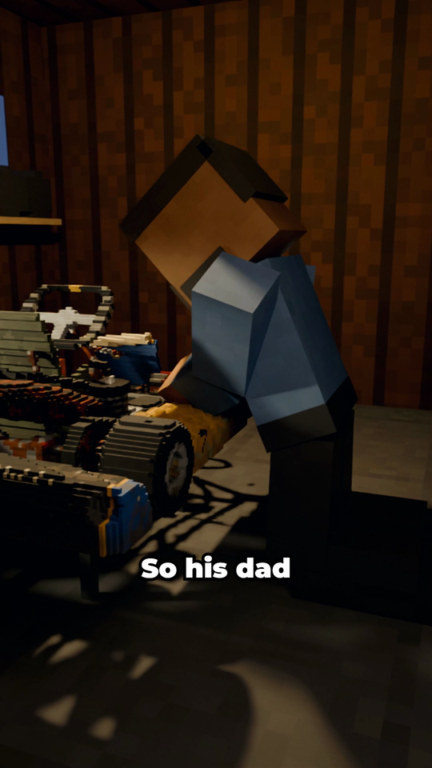
a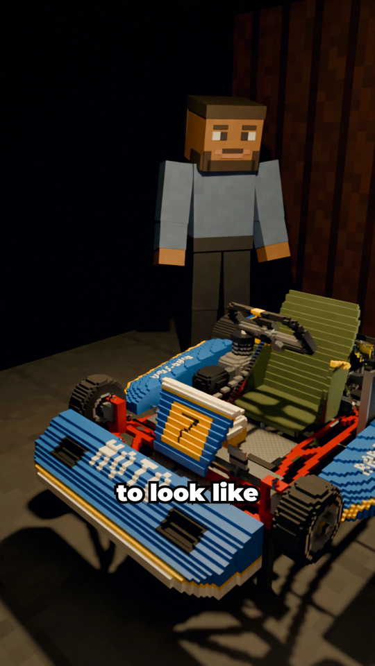
b“So his dad fixed it up to look like new,”
a: the dad kneels and sands the side pod. b: the same kart fixed up like new; he stands back. The red book pinned on the wall.
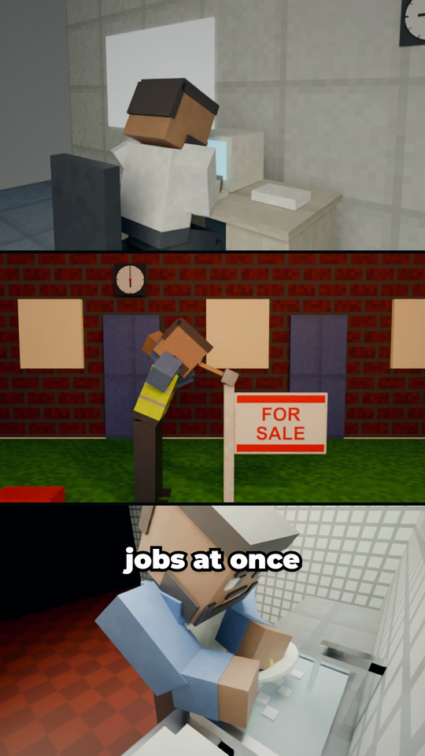
“and worked several jobs at once to keep him racing.”
Split screen, the dad's jobs: office desk (9:00); a full overhead sledgehammer swing knocking a FOR SALE board into a lawn (18:00); scrubbing a plate under the running tap at a restaurant sink (23:00).
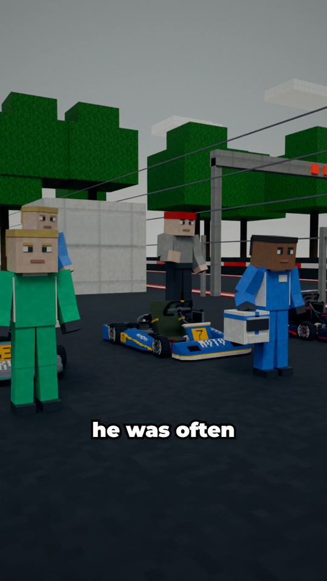
“At the track, he was often the only Black kid.”
The kart track paddock: kids by their karts, which face them (bigger, cadet-size library karts). He's the only Black kid.
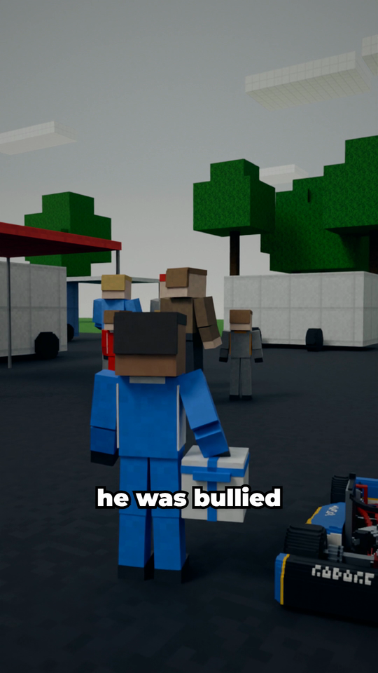
“He later said he was bullied and racially abused,”
A group of kids and parents stand with their backs turned to him. He stands alone, helmet in hand.
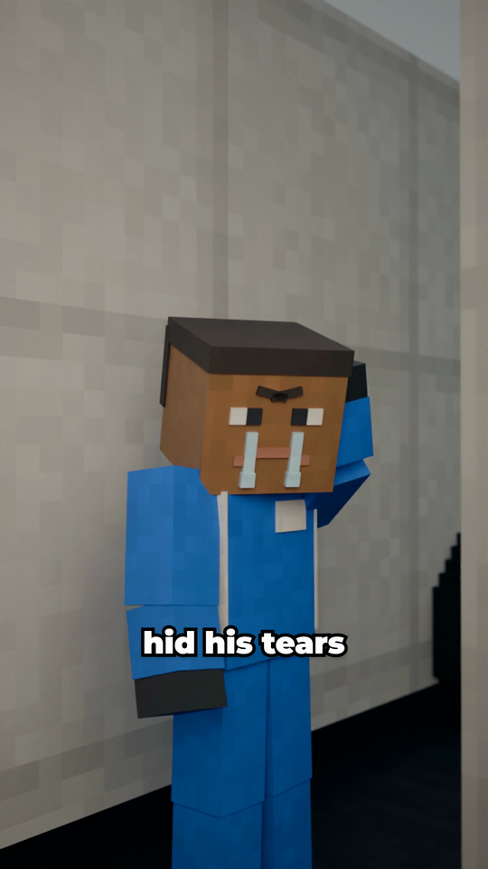
a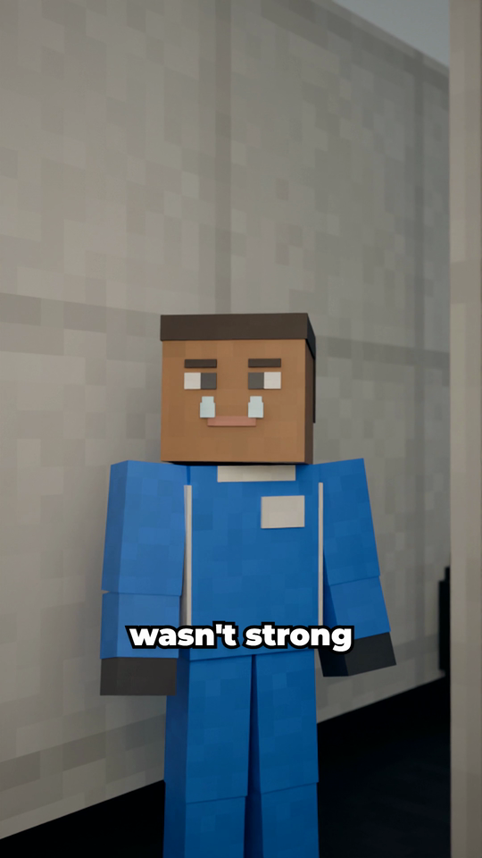
b“and that he hid his tears so his dad wouldn't think he wasn't strong. His”
Behind a van he wipes the tears from his eye (tears on both cheeks), lit a little; then, as his dad comes, he straightens up.
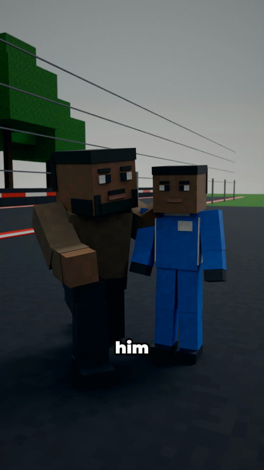
a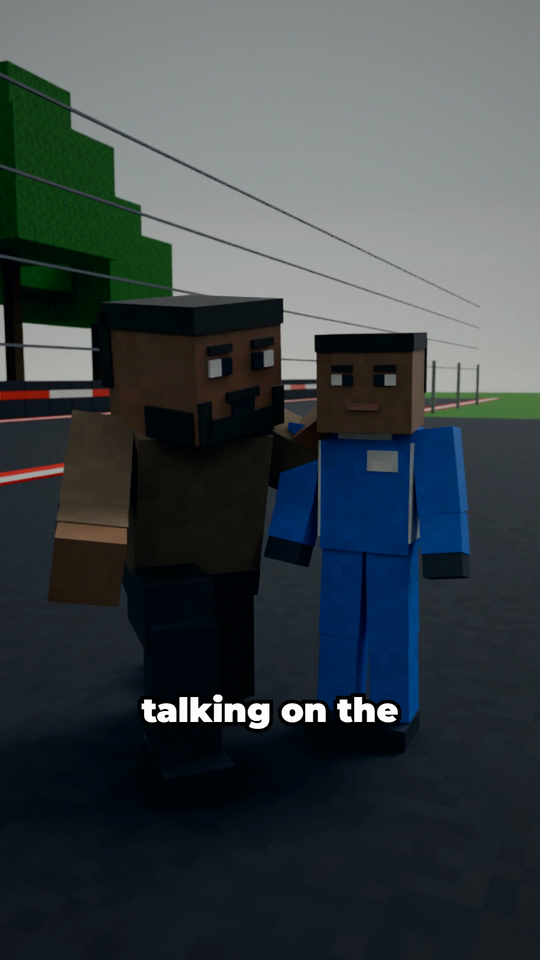
b“dad told him: always do your talking on the track. So”
His dad kneels at his side, turned toward us, talking, his hand on the boy's shoulder; on 'track' he points at the circuit. The kart is parked well back.
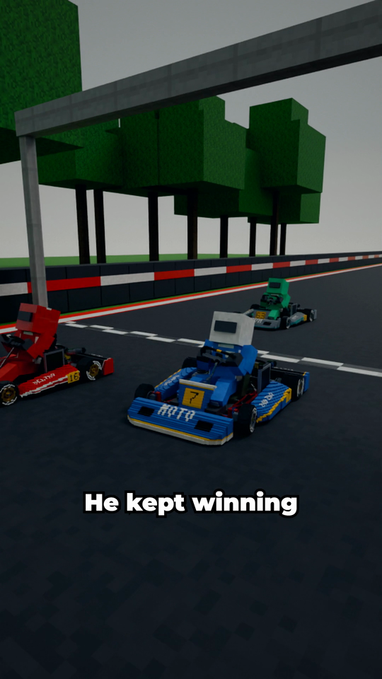
“he did. He kept winning.”
Wide: visor down, the karts launch and he takes the inside line. The wheels roll.